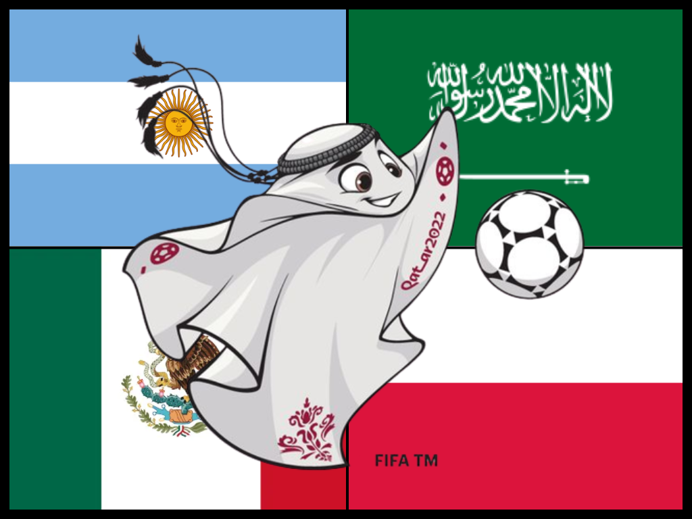
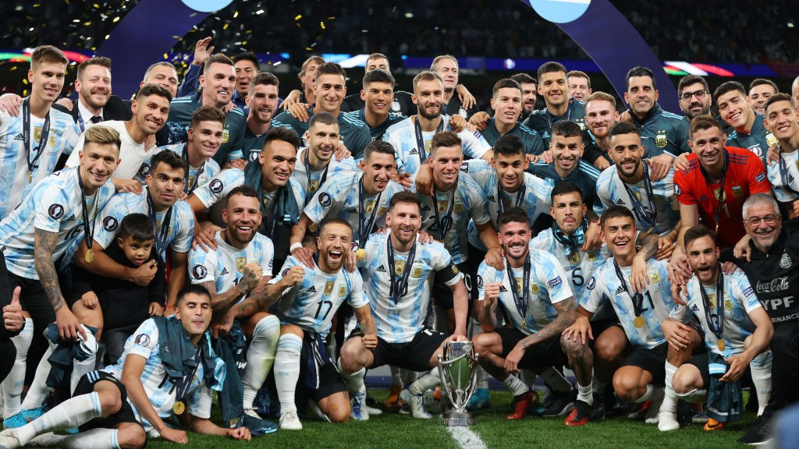
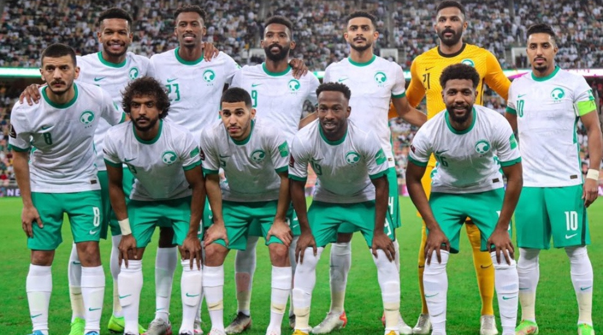
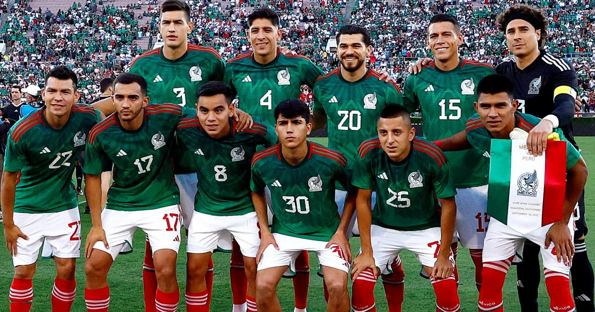
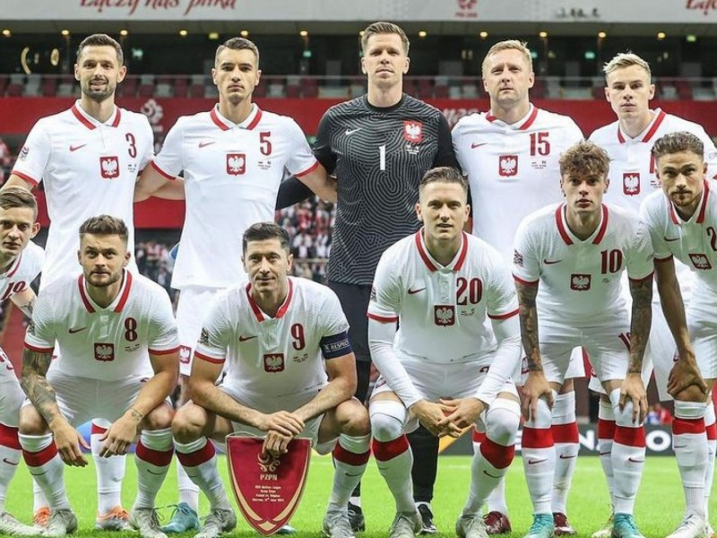

O grupo C da Argentina e Polônia confirmaram favoritismo e avançaram às quartas, mas não foi fácil.
A Copa do Mundo 2022 é mais um momento para reunir os maiores jogadores e seleções do planeta, e a emoção não fica reservada apenas para as fases finais. O Grupo C, com México, Argentina, Arábia Saudita e Polônia é um bom exemplo disso, o que ficou bem evidente logo no primeiro jogo da chave.
Esta edição de 2022, no Qatar, será a última no formato de 32 seleções divididas em oito grupos de quatro. E isso foi feito por meio de um sorteio, em abril. Cada grupo tem um cabeça de chave, uma equipe do pote 2 (classificada entre 8º e 15º no ranking da Fifa), uma do pote 3 (entre o 16º e 23º lugar) e uma do pote 4.


Conhecida carinhosamente como La Albiceleste, a Argentina é uma das grandes seleções de futebol do mundo, tendo conquistado 2 Copas do Mundo - em 1978 e em 1986 - Quinze títulos da Copa América, uma Copa das Confederações, uma finalíssima em 2022 e duas medalhas de ouro em Jogos Olímpicos, em Atenas-2004 e em Pequim-2008. Juntamente com o Brasil e com a França, a Argentina é uma das 3 seleções nacionais a ter conquistado as 3 mais importantes competições de futebol entre seleções.

A Arábia Saudita faz na edição do Qatar sua sexta participação na história da Copa do Mundo. Eles participaram do torneio pela primeira vez em 1994 e causaram um impacto instantâneo ao chegarem às oitavas de final logo na estreia.Será que os Green Falcons podem se sair ainda melhor no Qatar? Bem, talvez nem o técnico Herve Renard tenha imaginado um início tão promissor no torneio: na estreia na Copa do Mundo de 2022, a Arábia Saudita protagonizou a maior zebra até o momento ao bater a Argentina de Lionel Messi, de virada, por 2 a 1.

O México faz na edição do Qatar sua oitava participação consecutiva na Copa do Mundo, depois de terminar em segundo lugar nas eliminatórias da CONCACAF, atrás do Canadá no saldo de gols.O seu melhor desempenho aconteceu nas edições de 1970 e 1986, respectivamente, quando chegaram nas quartas de final e, aliás, foram os anfitriões em ambas as ocasiões.Depois de cair nas oitavas de final em 2018, eles podem ir mais longe desta vez?

Depois de apenas uma vitória em 2018, a Polônia está de volta à Copa do Mundo! No Grupo C, os poloneses avançaram às oitavas de final após a segunda posição, com quatro pontos, dois a menos que a líder Argentina. México e Arábia Saudita completaram a chave.Robert Lewandowski está em grande forma no Barcelona, assim como a dupla da Juventus Arkadiusz Milik e Wojciech Szczesny, que já provou dar conta dos jogos em alto nível.